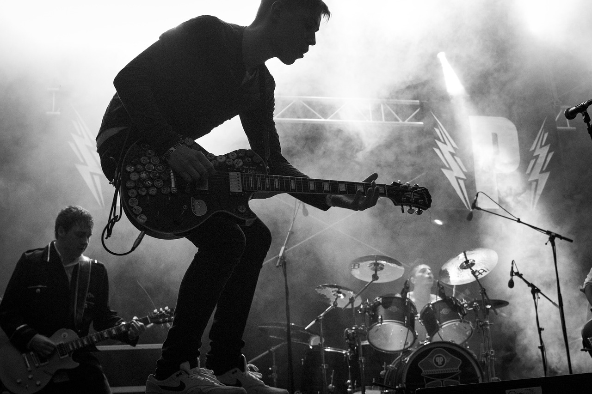

Sejarah

Umumnya kategori musik rock lebih menonjolkan beat dengan tempo cepat serta sound musik yang lebih distorsi. Munculnya jenis musik rock berakar dari rhythm and blues, country, dan boogie woogie pada era tahun 40-an dan 50-an.
Musik rock n roll dengan sub genre boogie woogie awalnya dipelopori oleh Bill Haley, yang kemudian dipopulerkan oleh Elvis Presley (Raja Rock n Roll) di daratan Amerika dan Little Richard di Inggris. Diera ini, alat musik inti dari rock n roll adalah gitar listrik, bas betot, dan drum
Diera tahun 1960-an hingga 1970-an, musik rock semakin diperkaya dengan berbagai unsur alat musik, seperti: keyboard, synthesizer, biola, harmonika, tamborine, dan berbagai alat musik lainnya. Dari berbagai polesan irama musik tersebut maka lahirlah sub genre yang lainnya dari musik rock, seperti: punk rock, blues rock, country rock, soft rock, volk rock, hard rock, progressive rock, dan heavy metal, dan beberapa lagi.
Band-Band yang berpengaruh
The Beatles
Dibentuk di Liverpool pada 1960, The Beatles bisa dibilang sebagai band paling berpengaruh di dunia. John Lennon, Paul McCartney, George Harrison, dan Ringo Starr mencoba meramu berbagai gaya musik menjadi satu irama menarik.
Mulai dari balada pop, hard rock, hingga musik India coba disuguhkan oleh The Beatles. Hasilnya, 'Yesterday', 'Let It Be', 'I Want to Hold' Your Hands', 'Help', dan yang lainnya sukses menjadi hits yang masih enak diputar hingga saat ini.
The Beatles juga terkenal dengan kontribusi mereka dalam perubahan budaya populer pada masa itu, dari gaya rambut dan pakaian hingga pengaruh sosial dan politik. Mereka juga dikenal dengan album konseptual, seperti Sgt. Pepper's Lonely Hearts Club Band (1967) dan Abbey Road (1969), yang dianggap sebagai salah satu karya terbaik dalam sejarah musik populer.
The Rolling Stones
Grup band rock legendaris asal London, Inggris ini terbentuk pada 1962. , The Rolling Stones beranggotakan Mick Jagger (vokal), Keith Richards (gitar), Charlie Watts (drummer), Ronnie Wood (gitar), dan Bill Wyman (bass) yang kemudian digantikan oleh Darryl Jones.
Sepanjang kariernya, The Rolling Stones merilis banyak album sukses, termasuk Some Girls (1978), Tattoo You (1981), dan Steel Wheels (1989). Mereka juga rajin melakukan tur dunia dan menjadi salah satu grup band dengan konser terbanyak dalam sejarah musik. Mereka juga menerima banyak penghargaan, dan masuk dalam Rock and Roll Hall of Fame pada 1989.
Led Zeppelin
Led Zeppelin adalah salah satu grup band rock klasik terkenal yang berasal dari Inggris. Grup band ini terdiri dari empat anggota, yaitu Jimmy Page (gitaris), Robert Plant (vokalis), John Paul Jones (bassis), dan John Bonham (drummer). Mereka membentuk Led Zeppelin pada 1968 dan menghasilkan beberapa album yang menjadi karya terbaik mereka.
Jimmy Page, selain sebagai gitaris utama, juga berperan sebagai produser untuk album-album grup band ini. Robert Plant, vokalis utama dikenal dengan suaranya yang khas dan kemampuannya dalam menciptakan lirik lagu yang penuh makna. Sedangkan John Paul Jones, selain memainkan bass juga berperan sebagai keyboardist dan arranger untuk beberapa lagu mereka. Dan John Bonham, dikenal sebagai salah satu drummer terbaik dalam sejarah musik rock.
Led Zeppelin populer sejak akhir 1960-an dengan lagu-lagu hits mereka seperti Stairway to Heaven, Kashmir, Whole Lotta Love, Black Dog, Rock and Roll, dan masih banyak lagi. Musiknya dipengaruhi oleh beberapa genre seperti blues, rock and roll, dan musik klasik menjadi komposisi musik yang kuat.
Queen
Queen adalah grup band rock legendaris yang berasal dari Inggris dengan empat anggota yaitu Freddie Mercury (vokalis), Brian May (gitaris), John Deacon (bassis), dan Roger Taylor (drummer). Mereka membentuk Queen pada 1970 hingga sukses menjadi salah satu grup band rock terbesar dalam sejarah musik.
Freddie Mercury, dikenal dengan suaranya yang unik dan kemampuannya dalam berinteraksi dengan penonton. Brian May terkenal dengan suara gitarnya yang khas dan kemampuannya dalam menciptakan lagu-lagu hit. John Deacon sang bassist yang juga aktif dalam penulisan lagu-lagu Queen. serta Roger Taylor dikenal sebagai salah satu drummer terbaik dalam di jajaran musisi rock pada masanya.
Queen memiliki banyak lagu hits seperti Bohemian Rhapsody,We Will Rock You, We Are The Champions, Somebody to Love, Don't Stop Me Now, Radio Ga Ga, dan masih banyak lagi. Musik Queen dipengaruhi oleh beberapa genre seperti rock, pop, opera, dan musik klasik, yang membedakan mereka dari grup band rock lainnya.
Album

Musisi rok pada pertengahan 1960-an mulai memajukan album di atas singel sebagai bentuk dominan dari ekspresi dan konsumsi musik rekaman, dengan The Beatles di garis depan perkembangan ini. Kontribusi mereka memberikan genre ini legitimasi budaya di arus utama dan memulai era album di industri musik selama beberapa dekade berikutnya.
Tabel ini merupakan daftar album Rock terlaris di seluruh dunia bedasarkan Wikipedia. Kriteria album yang ditampilkan di sini harus memiliki sumber yang tepercaya dan harus terjual sedikitnya 20 juta kopi di seluruh dunia. Daftar ini hanya berisi dari Album Studio sehingga Album-album komplikasi seperti Album 'Greatest Hits' dan lainnya tidak di hitung
| Artist |
Album |
Rilis |
Penjualan |
| AC/DC |
Back in Black |
1980 |
50 juta |
| Pink Floyd |
The Dark Side of the Moon |
1973 |
45 juta |
| Eagles |
Hotel California |
1976 |
42 juta |
| Led Zeppelin |
Led Zeppelin IV |
1971 |
37 juta |
| Gun N' Roses |
Appetite for Destruction |
1987 |
30 juta |
| Pink Floyd |
The Wall |
1979 |
30 juta |
| The Beatles |
Abbey Road |
1969 |
30 juta |
| Nirvana |
Nevermind |
1991 |
26 juta |
| Bon Jovi |
Slippery When Wet |
1986 |
25 juta |
| Def Leppard |
Hysteria |
1987 |
20 juta |
| Oasis |
Morning Glory? |
1995 |
20 juta |
| Pink Floyd |
Wish You Were Here |
1975 |
20 juta |
Personel
Setiap band pasti memiliki satu atau lebih personel yang menjadi andalan dari band tersebut, baik dari segi kemampuannya ataupun popularitasnya. personel personel band inilah yang menentukan seperti apa karakter musik suatu band.
Berikut ini beberapa personel personel terbaik bedasarkan posisi mereka di dalam band.
Vokalis terbaik
Frederick "Freddie" Mercury adalah seorang penyanyi-penulis lagu dan produser rekaman dan vokalis utama dari band rock Queen berkebangsaan Inggris. Dia dianggap sebagai salah satu dari penyanyi terbaik dalam sejarah musik populer, dan dikenal atas kepribadian flamboyan di panggung dan jangkauan vokal empat-oktafnya.
Mercury terkenal karena penampilan langsungnya, yang sering ditampilkan kepada penonton stadion di seluruh dunia. Dia menunjukkan sebuah gaya yang sangat teatrikal yang sering menimbulkan banyak partisipasi dari para penonton.
Gitaris terbaik
Eddie Van Halen adalah gitaris dari band Van Halen asal Amerika Serikat. Eddie Van Halen dikenal sebagai salah satu pemain gitar listrik yang memiliki banyak inovasi permainan sehingga namanya dikenal luas. Grup musik Van Halen sendiri populer di seluruh dunia pada tahun 1980-an.
Eddie Van Halen adalah salah satu dewa gitar yang terkenal jadi pelopor teknik two handed tapping, permainan gitar dia juga sangat berbeda dengan pemain-pemain gitar rock lainnya yang sangat kental dengan bluesnya. solo gitarnya yang terkenal adalah 'Eruption'
Drummer terbaik
John Bunham adalah drummer dari band Led Zeppelin. John Bunham merupakan drummer yang berasal dari Britania Raya dan dikenal sebagai drummer rock terbaik. Ia dikenal sebagai drummer yang memiliki kecepatan, kekuatan, dan memiliki kaki kanan yang eksplosif.
Namanya sangat meroket menjadi pemain drum terbaik lantaran banyak orang yang kagum akan kemampuannya memukul bass drum dengan cepat. rekan rekannya mengungkap kecemerlangan teknik Bonzo yang meskipun secara radikal sangat keras, namun dilandasi oleh kepekaan musikal yang lembut.
Bassist terbaik
Billy Sheehan adalah bassist dari band rock asal amerika, Mr.Big. Sebelumnya ia juga pernah tergabung dalam beberapa band, salah satunya Talas. Dia juga pernah bekerja sama dengan beberapa musisi dunia lainnya, diantara Steve Vai, dan David Lee Roth.
Billy Sheehan juga pernah mendapatkan penghargaan “Best Rock Bass Player” dari Guitar Player Magazine untuk permainan gaya lead bass-nya sebanyak 5 kali. Sheehan juga tercatat sebagai pemain bass yang stabil dan memenuhi peran tradisional juga mendukung bass listrik di bagian irama rock.